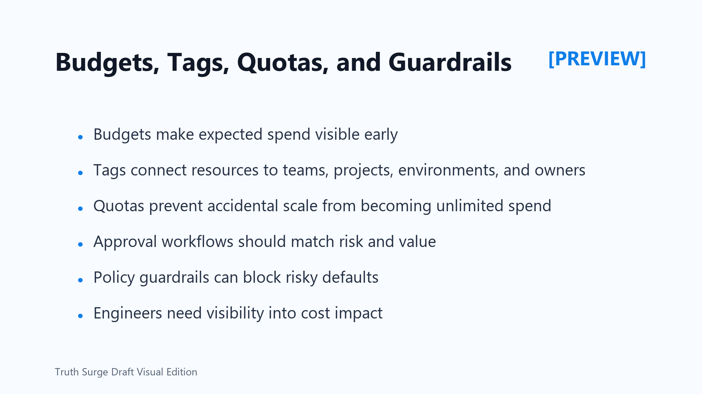

Budgets, Tags, Quotas, and Guardrails
Connecting to LMS... Progress: in progress

Narration
Governance controls help teams avoid accidental waste without stopping useful engineering. Budgets make expected spend visible before it becomes a surprise. Alerts can warn owners when a project, environment, or workload is trending beyond expectations.
Tags are the language of ownership. A useful tagging plan connects resources to teams, projects, environments, cost centers, owners, and lifecycle state. Without tags, cost review becomes guesswork. With tags, teams can connect spend to purpose and ask better questions.
Quotas and default limits prevent accidental scale from becoming open-ended spend. They should be high enough to support legitimate work and low enough to force review before expensive growth. Exception handling should be clear so urgent business needs have a responsible path.
Approval workflows should match risk and value. A small experiment may need lightweight controls. A production inference deployment or large training run may need stronger review. Guardrails are most effective when they block risky defaults, require ownership, and make cost impact visible.
Engineers need feedback. If the people creating workloads cannot see spend, utilization, and ownership, they cannot improve behavior. Cost control works best when financial signals appear close to the technical choices that create them.
Guardrails should also be humane and practical. A blocked deployment should explain what rule failed, who can approve an exception, and what safer default is expected. Clear feedback turns policy into guidance instead of friction for busy engineering teams.